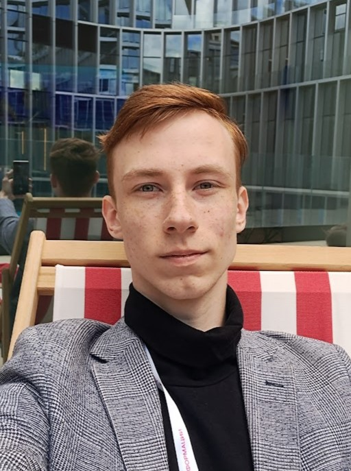
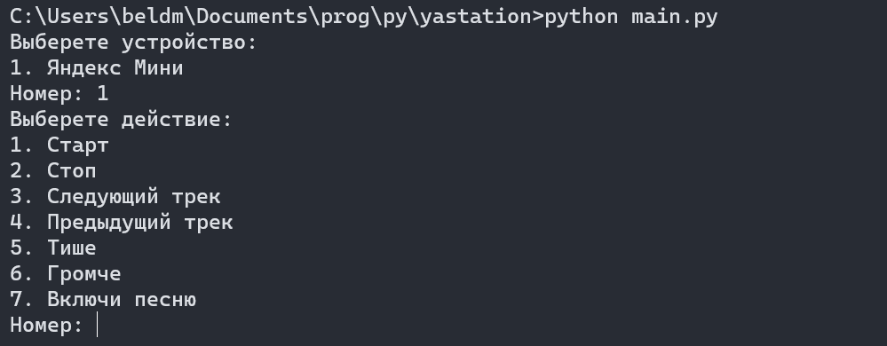
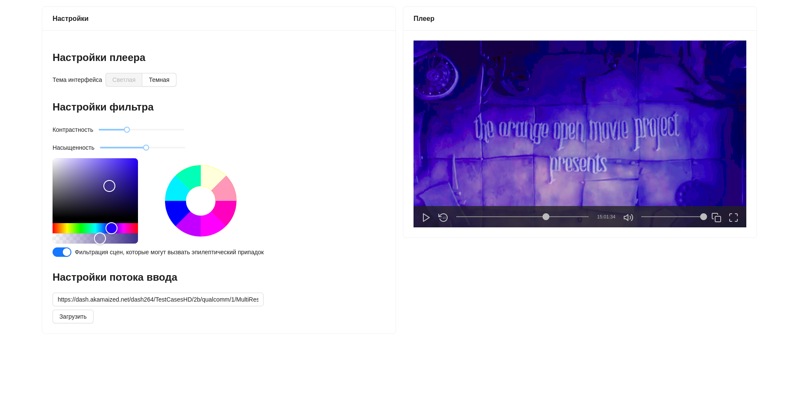
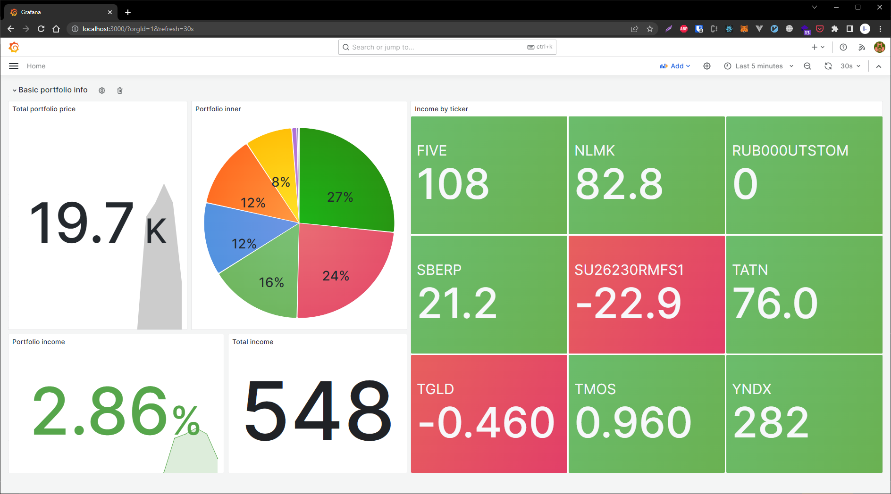
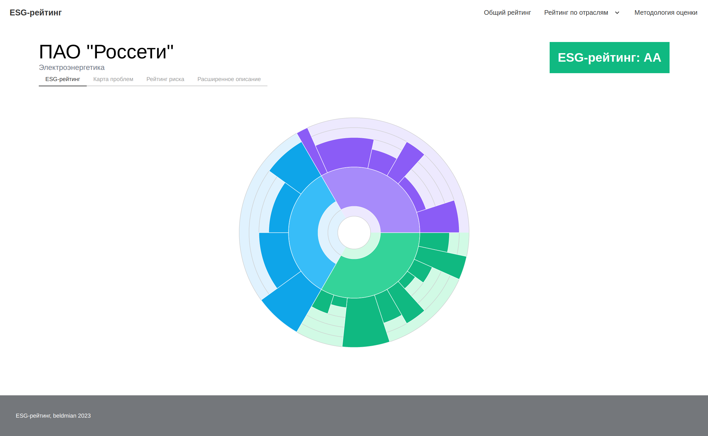

Белоусов Дмитрий Анатольевич
Интересуюсь разработкой сложных, высоконагруженных систем, в частности разбираюсь в концепциях архитектуры ПО. В основном работаю с языком Go, однако также поверхностно знаю Python, C и Java. Вне IT также разбираюсь в математике, что помогает мне и в разработке.

yastationНебольшой CLI-клиент для управления устройствами воспроизведения музыки от Яндкес.

colorblinderСервис фильтрации mpeg-dash стримов и VoD контента для людей с особенностями зрения.

invest_dashboardСервис для мониторинга инвестиционного портфолио

esgrsСистема расчета и визуализации единого ESG-рейтинга компаний